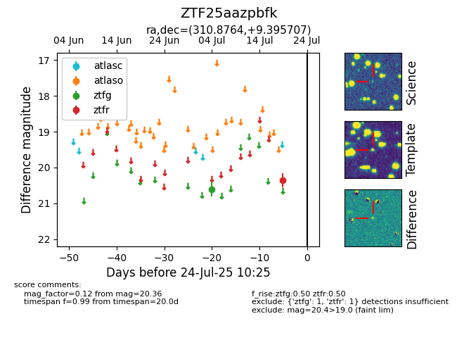

Target ZTF25aazpbfk at 2025-07-24 10:25, see:
FINK: fink-portal.org/ZTF25aazpbfk
Lasair: lasair-ztf.lsst.ac.uk/objects/ZTF25aazpbfk
ALeRCE: alerce.online/object/ZTF25aazpbfk
alt names
ZTF25aazpbfk (ztf,fink)
coordinates:
equatorial (ra, dec) = (310.8764,+9.39571)
galactic (l, b) = (55.1981,-19.75550)
photometry
last ztfg=20.61, ztfr=20.36
1 ztfg, 1 ztfr detections
